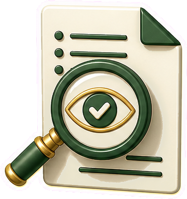

Estratégia
Análise qualificada de cenários e oportunidades.
Desde 2019
BWB Serviços
Consultoria, representação e agenciamento de negócios para conectar empresas a oportunidades consistentes, com inteligência de mercado, segurança e visão de longo prazo.
Segurança
Relações orientadas por critérios legais e negociais.
Valor
Conexões empresariais sustentáveis e duradouras.
Atuação
Conexões de valor para decisões empresariais consistentes.
Fundada em janeiro de 2019, a BWB atua de forma estruturada e estratégica nas áreas de consultoria, representação e agenciamento de negócios, conectando empresas a oportunidades economicamente viáveis, juridicamente seguras e alinhadas a relações de valor.
A empresa organiza relações empresariais com ética, respeito, transparência e boa-fé, preservando a autonomia decisória de clientes e parceiros envolvidos.
Consultoria estratégica
Leitura de cenários, análise de oportunidades e suporte à tomada de decisões.
Representação
Condução profissional de interesses empresariais com alinhamento e previsibilidade.
Agenciamento de negócios
Aproximação qualificada entre empresas, demandas e oportunidades viáveis.
Método
Da oportunidade à relação estruturada.
Mapeamento criterioso de oportunidades e interesses legítimos entre as partes.
Construção de caminhos negociais com transparência, técnica e segurança.
Acompanhamento estratégico para fortalecer relações sólidas e de longo prazo.
Missão e visão
Responsabilidade institucional como base de crescimento.
Mais do que viabilizar negócios, a BWB estrutura conexões de valor, promove relações sólidas e contribui para o crescimento sustentável, sempre observados os limites de sua atuação e a autonomia decisória das partes envolvidas.
Missão
Atuar com excelência técnica e responsabilidade institucional na prestação de serviços de consultoria, representação e agenciamento de negócios.
Visão
Consolidar-se como empresa de referência no desenvolvimento estratégico de negócios, reconhecida pela solidez, credibilidade e segurança de sua atuação.
Valores
Princípios que orientam cada relação.
Ética e boa-fé objetiva
Integridade, lealdade negocial e observância aos preceitos legais aplicáveis.
Respeito institucional
Urbanidade, equilíbrio e consideração pela autonomia das partes envolvidas.

Transparência
Comunicação clara, precisa e tecnicamente adequada em todas as tratativas.
Excelência
Diligência qualificada, disciplina operacional e elevado padrão técnico.
Credibilidade institucional
Condutas consistentes, previsibilidade comportamental e segurança nas relações.
Visão estratégica
Inteligência, responsabilidade e perspectiva de longo prazo na geração de valor.
Contato
Vamos estruturar a próxima oportunidade.
Compartilhe o contexto do negócio para que a BWB avalie o melhor caminho de aproximação, análise e condução estratégica.